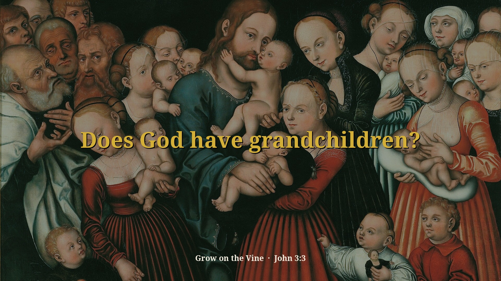
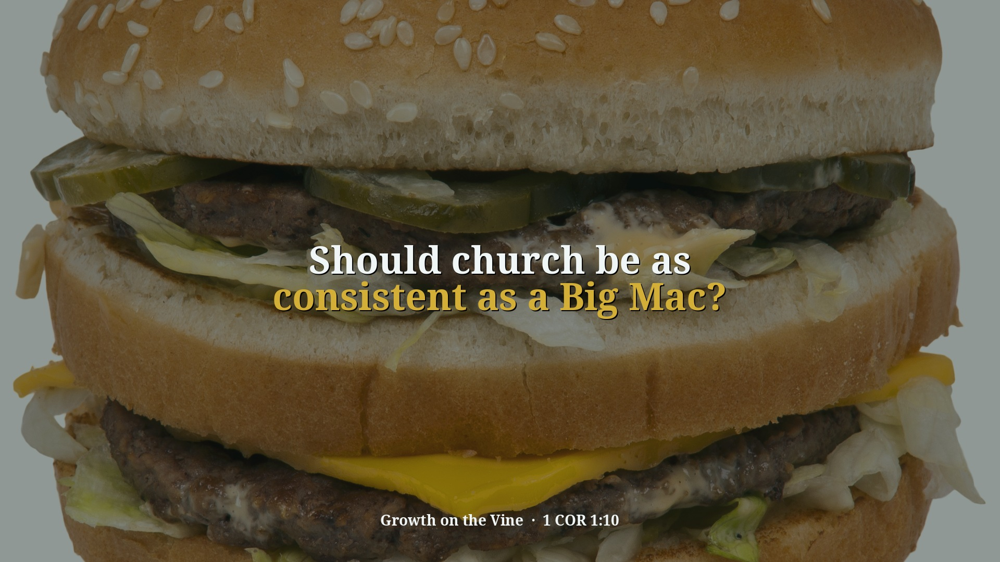
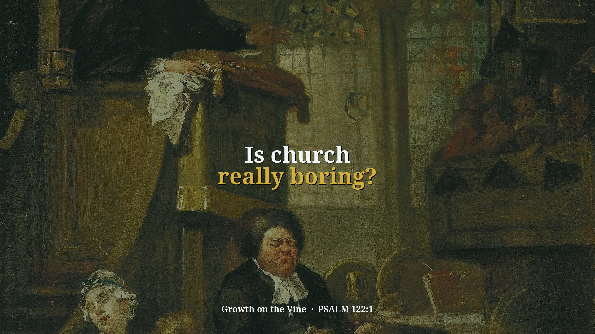
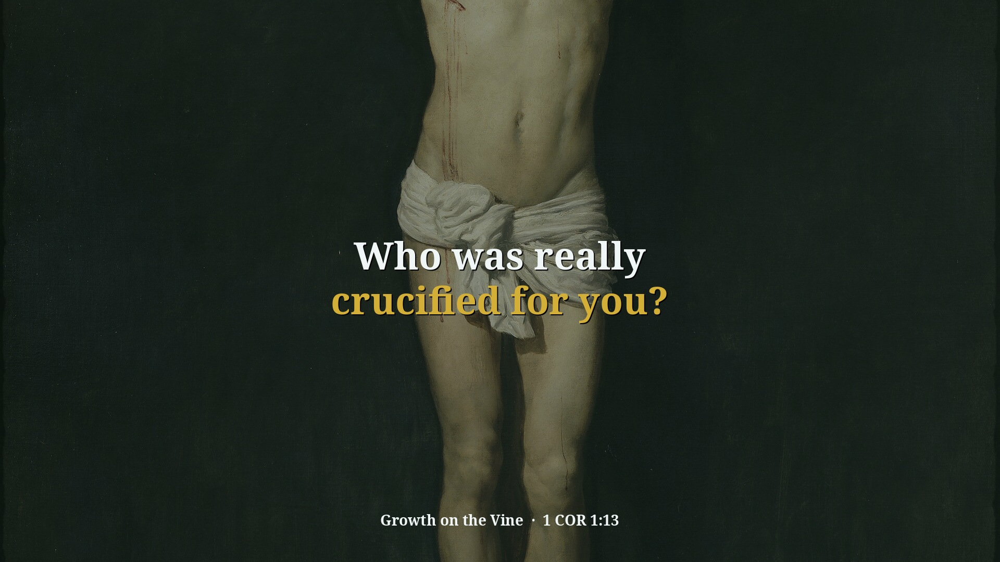
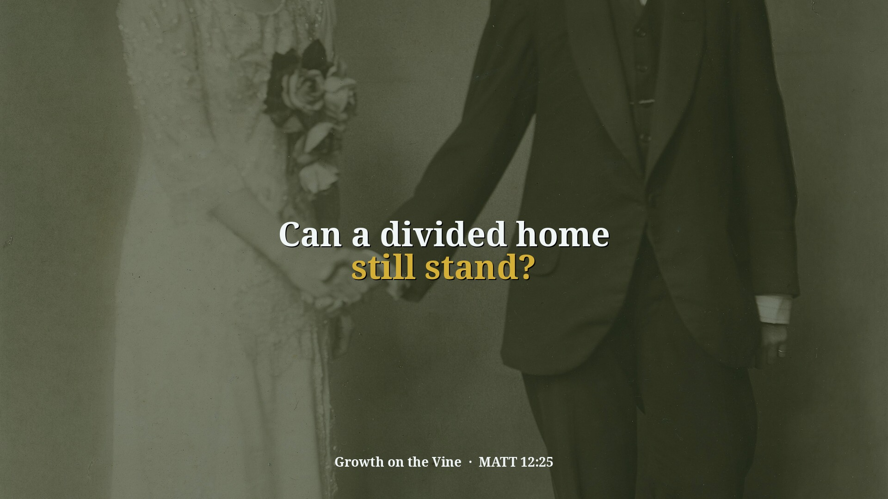
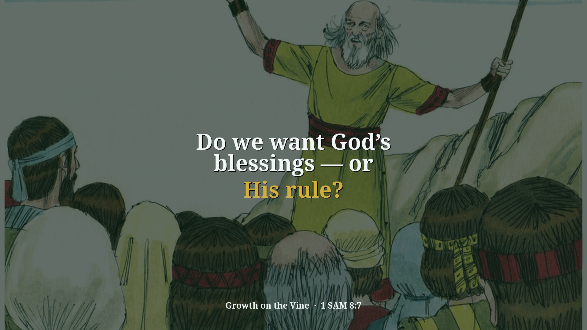
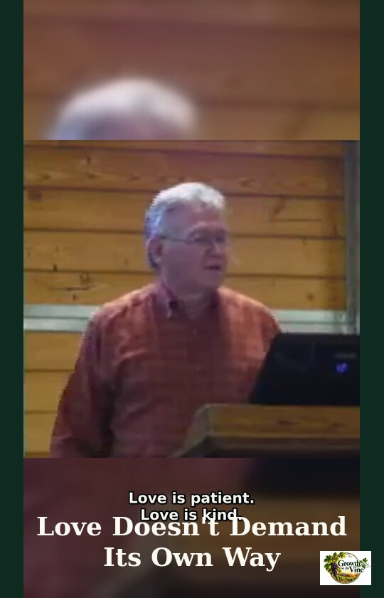
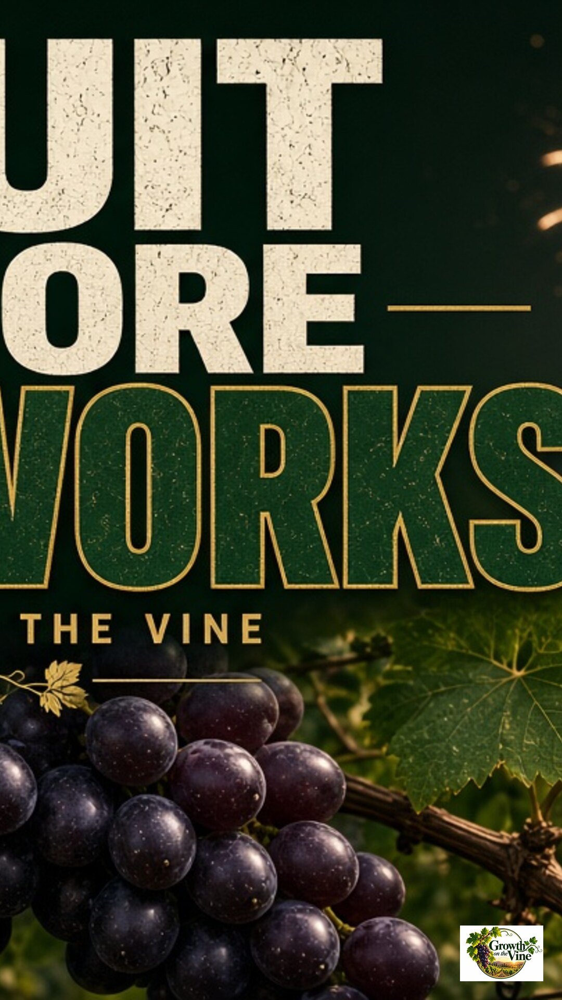

Library
Messages & Clips
Every full message and short clip in one place. Search by topic, verse, or any word that was said.
Showing all 21 messages and clips.
Saving a Nation
In “Saving a Nation,” Pastor David G. Kincer says the whole Bible, Old Testament included, was written for our learning, and uses Judges 17–18 (Micah, the tribe of Dan and the people of Laish) to picture a…
Division Part 1
In “Division Part 1,” Pastor David G. Kincer answers a new book that blames the church for young people leaving, saying the complaints are not new and the answer is to stop blaming and get in and make a…
Division Part 2
In “Division Part 2,” Pastor David G. Kincer continues through 1 Corinthians 1–2 and says unity is found in the power of God and the Spirit, not in excellent speaking, intellect or a favorite minister. He…
Division Concluded Part 1
In “Division Concluded Part 1,” Pastor David G. Kincer finishes the section of 1 Corinthians (chapter 4) where Paul deals with division. He contrasts how the Corinthians saw themselves with how real ministers…
Division Concluded Part 2
In “Division Concluded Part 2,” Pastor David G. Kincer finishes the Corinthians series on division with 1 Corinthians 4:17-21. He uses the Marines to show that unity can be done, says we cannot pick and choose…
A More Excellent Way
In “A More Excellent Way,” preached March 25, 2012, Pastor David G. Kincer teaches from 1 Corinthians 12:31–13:13 that love is the more excellent way to the spiritual manifestations. Without love, he says…

0:41Does God have grandchildren?
From “Division Part 2”
Does God have grandchildren? Being raised in a church family is not the same as being born again yourself.
- 1:24
Can the Word still turn a nation?
From “Saving a Nation”
Can the Word still turn a nation? God’s Word does the work when the church faithfully gets it beyond its four walls.
- 1:21
Do we only want to hear smooth things?
From “Saving a Nation”
Do we only want to hear smooth things? God’s Word does not flatter us into comfort; it calls us to hear and obey what is right.

1:04Should church be as consistent as a Big Mac?
From “Division Part 1”
Should church be as consistent as a Big Mac? Paul urged believers to speak the same thing, with no divisions among them.

1:27Is church really boring?
From “Division Part 1”
Is church really boring? David was glad to go to the house of the Lord, and the answer may say more about our involvement than about the church.

1:23Who was really crucified for you?
From “Division Part 1”
Who was really crucified for you? Paul pointed the divided Corinthians away from every name but Christ.
- 1:13
What if a nation turns back to God?
From “Saving a Nation”
What if a nation turns back to God? Jeremiah shows that repentance matters even when judgment has been pronounced.

1:27Can a divided home still stand?
From “Division Part 1”
Can a divided home still stand? Jesus said a house divided against itself shall not stand.

1:21Do we want God’s blessings — or His rule?
From “Saving a Nation”
Do we want God’s blessings and approval without letting God rule our lives? Scripture asks us to choose whether His Word will govern us.
- 1:16
Does “be perfect” mean never fail?
From “A More Excellent Way”
When Jesus says “be perfect,” He isn’t demanding a flawless life — He’s calling you into spiritual maturity and completeness.
- 0:57
What if my gifts are just noise?
From “A More Excellent Way”
Though I speak with the tongues of men and of angels, but have not love — I’m just noise. A clanging cymbal.

1:16Does real love insist on its own way?
From “A More Excellent Way”
Love doesn’t say “my way or the highway.” Love … does not seek its own, … thinks no evil.
- 1:12
Can I serve God and still miss knowing Him?
From “A More Excellent Way”
You can prophesy, cast out demons, and do mighty works in Jesus’ name — and still hear Him say, “I never knew you.”
- 1:36
What is the real goal of God’s Word?
From “A More Excellent Way”
The goal of the commandment is love out of a pure heart. Gifts and religious activity are means — not the destination.

1:15Is God looking for fruit — or fireworks?
From “A More Excellent Way”
Love is the first fruit of the Spirit and the peak of divine character. Don’t chase manifestations without becoming like God.
No messages or clips match .
Try a shorter or different word, or have a question? Ask it here.